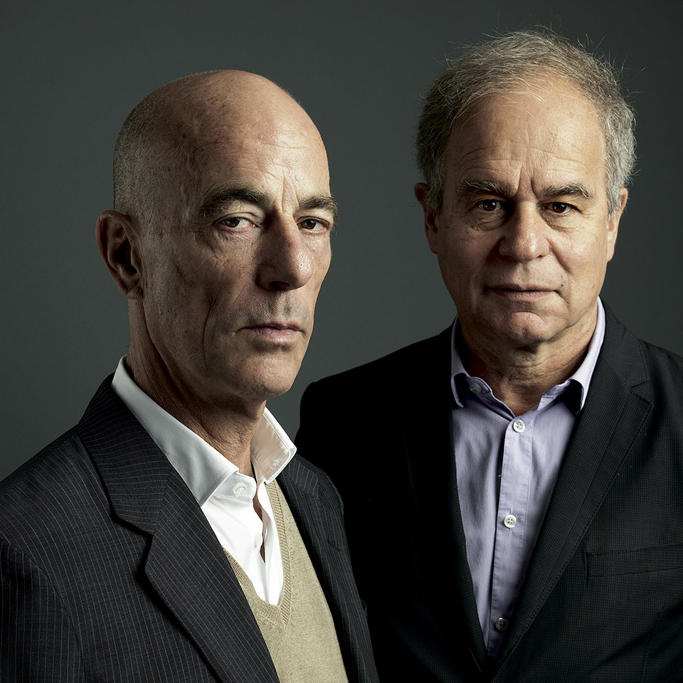

Herzog chan😘
Herzog & de Meuron Basel Ltd. is a Swiss architecture firm headquartered in Basel, founded by Jacques Herzog (born April 19, 1950) and Pierre de Meuron (born May 8, 1950). Both architects studied at the Swiss Federal Institute of Technology (ETH) in Zurich. They are widely recognized for their notable conversion of the Bankside Power Station in London into the new home of Tate Modern.
In addition to their architectural practice, Herzog and de Meuron served as professors at ETH Zürich from 1999 to 2018, where they co-founded ETH Studio Basel in 1999 alongside architects Roger Diener and Marcel Meili within the department of architecture. They have also held teaching roles as visiting professors at the Harvard University Graduate School of Design, with Jacques Herzog serving as a visiting tutor at the Cornell University College of Architecture, Art, and Planning.